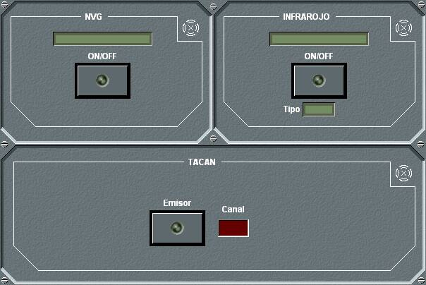

Infrarrojo

Dependiendo de la unidad, el panel de detalle del infrarrojo se presenta agrupado con diferentes sensores.
Desde este panel de detalle puede encenderse o apagarse el sensor, así como consultar el tipo de infrarrojo de que se trata (Medio o Largo).
En las unidades submarinas solo se puede encender el Infrarrojo si están en superficie o tienen el periscopio izado. En general, para todas las unidades, deben estar fuera de la base.
Si el equipo está dañado, no se podrá realizar ninguna operación sobre él.